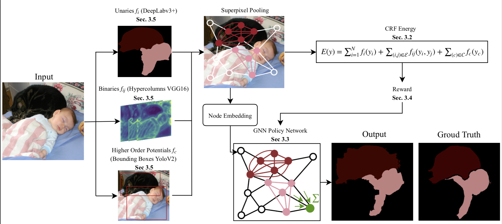
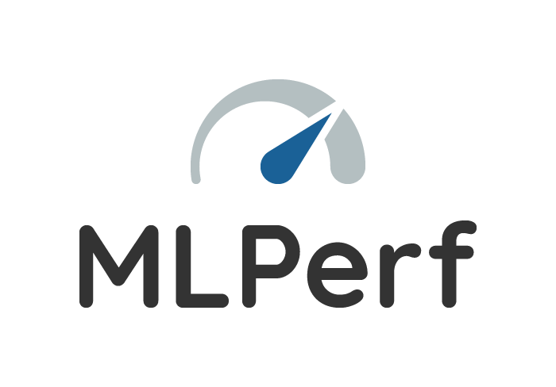

Maghav Kumar
|
I am a recent MS graduate from UIUC Computer Science. In my time at UIUC, I mainly worked with Professor Alex Schwing. My research interests lie at the intersection of Computer Vision, Generative Models and Reinforcement Learning. Recently I've been more interested in Generative Models for Zero-Shot and Few-Shot scenarios. I spent the Summer of 2018 at Baidu Research, Sunnyvale. I am also excited by recent Machine Learning startups and their impact on real world problems. I spent the Summer of 2019 at Planet Labs. I'm currently working at Hive AI and working towards helping out with MLPerf. Feel free to reach out regarding anything interesting - you can schedule a call with me here. Before working on Machine Learning and Computer Vision, I worked on C++ Language Development. |
|
|
|
|

|
|
![[NEW]](./files/new.png)
|
|

|
|
 | ||
|
|
| March 2020 | Paper accepted at CVPR 2020 as oral presentation. |
| Jan 2020 | Joining Hive AI for using Machine Learning to defend online platforms from abuse. |
| June 2019 | Our Team Schwail came 2nd in the TextVQA Challenge hosted at the VQA Workshop at CVPR 2019. |
| May 2019 | Starting Internship at Planet Labs to work on global semantic segmentation. |
| Aug 2018 | TA'ing and helping to create the Deep Learning course at UIUC under Prof. Lazebnik. |
| May 2018 | Spending the Summer at Baidu Research, Sunnyvale to work on Neural Architecture Search. |
|
|
- Natural Language Processing (CS 447) - Fall 2019
- Computer Vision (CS 543) - Spring 2019
- Deep Learning (CS 498DL) - Fall 2018
- Applied Machine Learning (CS 498AML) - Spring 2018
- Intro to Data Science (INFO490RB) - Fall 2017
Some great people I was fortunate to be mentored by: Robert, Greg, Yanqi, Vincent. |
Some great people I was fortunate to work with: Daniel, Jyoti, Harsh. |